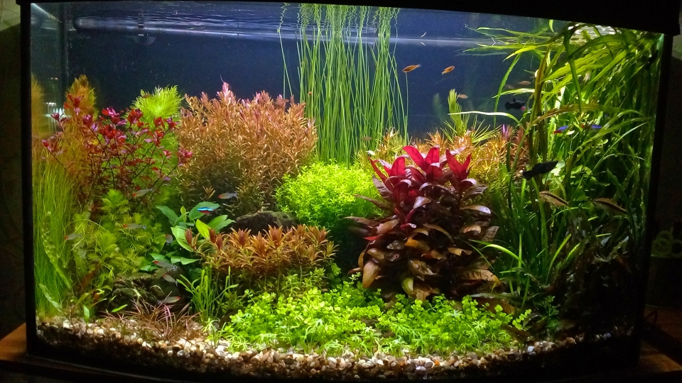
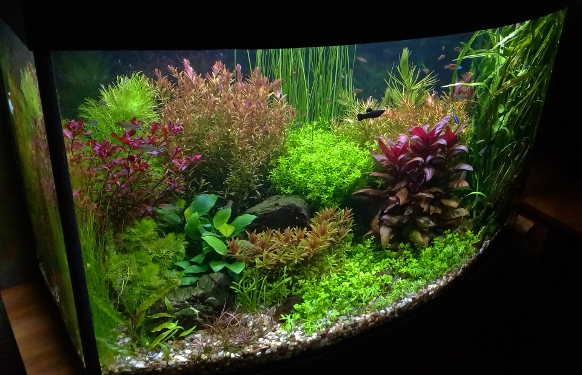

21.07.2018
Рослини ростуть - проблеми тільки у різній швидкості росту. Поки не вдається вирівняти задній план - хочу зловити цей момент та зробити гарне фото.
Була одна пригода - завелися планарії. І було помітно, як кожного дня їхня кількість та розмір зростали. Вирішив потруїти їх препаратом Планарія стоп. Все робив за інструкціїю, але, нажаль, разом з планаріями до своїх предків пішли і теодоксуси. В той час як інші равлики - катушки та фізи жодним чином не відреагували на лікування. Теодоксусів дуже шкода - і через їхню користь, на камінні образу почала рости зелень. Та, більше через їхню красу - були: чорні, сірі, зелені, коричневі та червоні. Поки є надія на покоління, що вилупиться з яєць, які залишили батьки. Але помітив, що не дивлячись на велику кількість яєць виживає не багато равликів, думаю не більше 10%
